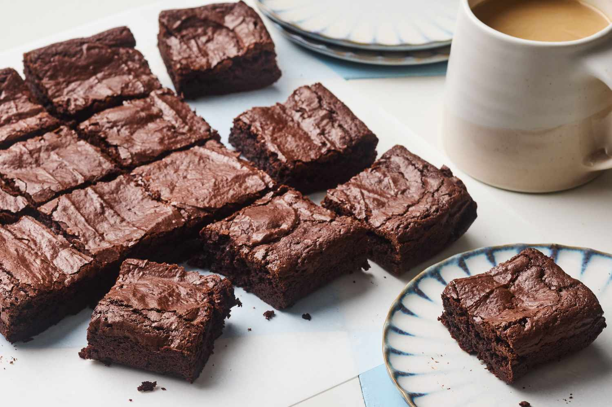

Brownies cu ciocolată

Ingrediente
- 300 g ciocolată amăruie
- 300 g făină
- 330 g zahăr
- 300 g unt
- 150 g picături de ciocolată
- 6 ouă
- 1/2 linguriță sare
- 1 esență de vanilie
Mod de preparare
1. Pregătirea ciocolatei și untului:
- Se topește untul împreună cu ciocolata amăruie la bain-marie sau la microunde, amestecând până devin omogene.
- Se lasă să se răcească puțin.
2. Amestecarea ingredientelor:
- Ouale se bat ușor cu zahărul și esența de vanilie până se omogenizează.
- Se adaugă amestecul de ciocolată și unt peste ouă și se amestecă bine.
- Se adaugă făina cernută împreună cu sarea, amestecând ușor până se încorporează.
- Se adaugă picăturile de ciocolată.
3. Coacerea:
- Se toarnă compoziția într-o tavă tapetată cu hârtie de copt.
- Se coace la 180°C timp de 25-30 minute.
- Se lasă să se răcească complet înainte de tăiere.
Informații suplimentare
Timp de preparare: 35 minute
Calorii: ~420 kcal / 100 g